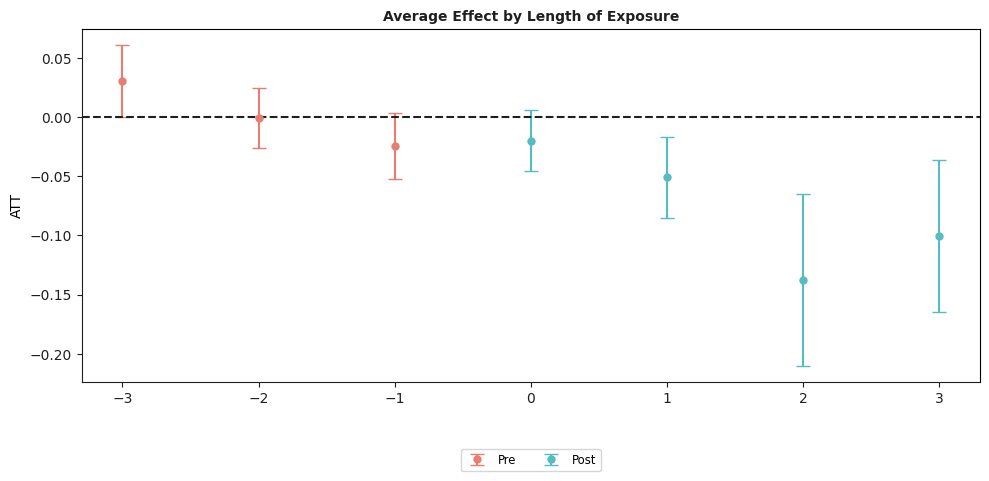
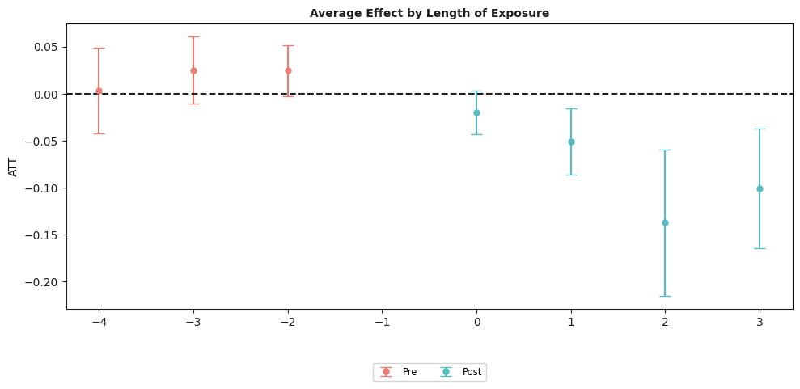

Dynamic Effects with base_period = "universal"¶
This notebook shows how to estimate dynamic (event-study) treatment effects with the csdid package using the base_period = "universal" option of ATTgt.fit().
The base_period argument controls which pre-treatment period is used as the reference for each \(ATT(g,t)\):
base_period = "varying"(default) — the base period changes with \(t\). For pre-treatment periods, the base is \(t-1\) (so pre-treatment \(ATT(g,t)\) resemble a placebo test in differences). For post-treatment periods, the base is the last period before \(g\) becomes treated.base_period = "universal"— the base period is fixed to the last pre-treatment period for every group (with anticipation accounted for). The \(ATT\) at the base period itself is normalized to zero. This matches the standard event-study normalization that fixes the level at \(e = -1\).
Both options give the same \(ATT(g,t)\) for post-treatment periods. They differ only in how pre-treatment \(ATT(g,t)\) are reported, which in turn changes the look of the event-study plot.
[1]:
# pip install git+https://github.com/d2cml-ai/csdid/
# pip install git+https://github.com/d2cml-ai/DRDID
from csdid.att_gt import ATTgt
import pandas as pd
import warnings
warnings.filterwarnings('ignore')
Data¶
We use the same mpdta dataset (county-level teen employment, 2003-2007) used elsewhere in this site.
[2]:
mpdta = pd.read_csv("https://raw.githubusercontent.com/d2cml-ai/csdid/main/data/mpdta.csv")
mpdta.head()
[2]:
| year | countyreal | lpop | lemp | first.treat | treat | |
|---|---|---|---|---|---|---|
| 0 | 2003 | 8001 | 5.896761 | 8.461469 | 2007 | 1 |
| 1 | 2004 | 8001 | 5.896761 | 8.336870 | 2007 | 1 |
| 2 | 2005 | 8001 | 5.896761 | 8.340217 | 2007 | 1 |
| 3 | 2006 | 8001 | 5.896761 | 8.378161 | 2007 | 1 |
| 4 | 2007 | 8001 | 5.896761 | 8.487352 | 2007 | 1 |
Varying base period (default)¶
First, the default. base_period does not need to be specified.
[3]:
mw_varying = ATTgt(
yname="lemp",
gname="first.treat",
idname="countyreal",
tname="year",
xformla="lemp~1",
data=mpdta,
).fit(est_method="dr", base_period="varying")
mw_varying.summ_attgt().summary2
[3]:
| Group | Time | ATT(g, t) | Post | Std. Error | [95% Pointwise | Conf. Band] | ||
|---|---|---|---|---|---|---|---|---|
| 0 | 2004 | 2004 | -0.0105 | 1 | 0.0232 | -0.0727 | 0.0517 | |
| 1 | 2004 | 2005 | -0.0704 | 1 | 0.0321 | -0.1565 | 0.0157 | |
| 2 | 2004 | 2006 | -0.1373 | 1 | 0.0379 | -0.2391 | -0.0355 | * |
| 3 | 2004 | 2007 | -0.1008 | 1 | 0.0357 | -0.1967 | -0.0049 | * |
| 4 | 2006 | 2004 | 0.0065 | 0 | 0.0245 | -0.0594 | 0.0724 | |
| 5 | 2006 | 2005 | -0.0028 | 0 | 0.0193 | -0.0545 | 0.0490 | |
| 6 | 2006 | 2006 | -0.0046 | 1 | 0.0172 | -0.0507 | 0.0415 | |
| 7 | 2006 | 2007 | -0.0412 | 1 | 0.0196 | -0.0938 | 0.0113 | |
| 8 | 2007 | 2004 | 0.0305 | 0 | 0.0153 | -0.0105 | 0.0716 | |
| 9 | 2007 | 2005 | -0.0027 | 0 | 0.0164 | -0.0467 | 0.0412 | |
| 10 | 2007 | 2006 | -0.0311 | 0 | 0.0182 | -0.0799 | 0.0177 | |
| 11 | 2007 | 2007 | -0.0261 | 1 | 0.0173 | -0.0726 | 0.0205 |
[4]:
mw_varying.aggte(typec="dynamic")
mw_varying.plot_aggte();
Overall summary of ATT's based on event-study/dynamic aggregation:
ATT Std. Error [95.0% Conf. Int.]
-0.0772 0.0221 -0.1205 -0.034 *
Dynamic Effects:
Event time Estimate Std. Error [95.0% Simult. Conf. Band
0 -3 0.0305 0.0155 0.0002 0.0608 *
1 -2 -0.0006 0.0130 -0.0261 0.0250
2 -1 -0.0245 0.0142 -0.0522 0.0033
3 0 -0.0199 0.0132 -0.0458 0.0060
4 1 -0.0510 0.0173 -0.0848 -0.0171 *
5 2 -0.1373 0.0371 -0.2100 -0.0646 *
6 3 -0.1008 0.0327 -0.1650 -0.0366 *
---
Signif. codes: `*' confidence band does not cover 0
Control Group: Never Treated ,
Anticipation Periods: 0
Estimation Method: Doubly Robust

Universal base period¶
Now set base_period = "universal" in the call to fit. Everything else stays the same.
[5]:
mw_universal = ATTgt(
yname="lemp",
gname="first.treat",
idname="countyreal",
tname="year",
xformla="lemp~1",
data=mpdta,
).fit(est_method="dr", base_period="universal")
mw_universal.summ_attgt().summary2
No units in group 2004 in time period 1, e2
No available control units for group 2004 in time period 1, e4
No units in group 2006 in time period 3, e2
No available control units for group 2006 in time period 3, e4
No units in group 2007 in time period 4, e2
No available control units for group 2007 in time period 4, e4
[5]:
| Group | Time | ATT(g, t) | Post | Std. Error | [95% Pointwise | Conf. Band] | ||
|---|---|---|---|---|---|---|---|---|
| 0 | 2004 | 2003 | NaN | 0 | NaN | NaN | NaN | |
| 1 | 2004 | 2004 | -0.0105 | 1 | 0.0248 | -0.0771 | 0.0561 | |
| 2 | 2004 | 2005 | -0.0704 | 1 | 0.0334 | -0.1599 | 0.0191 | |
| 3 | 2004 | 2006 | -0.1373 | 1 | 0.0385 | -0.2406 | -0.0339 | * |
| 4 | 2004 | 2007 | -0.1008 | 1 | 0.0326 | -0.1882 | -0.0135 | * |
| 5 | 2006 | 2003 | -0.0038 | 0 | 0.0320 | -0.0895 | 0.0820 | |
| 6 | 2006 | 2004 | 0.0028 | 0 | 0.0193 | -0.0490 | 0.0545 | |
| 7 | 2006 | 2005 | NaN | 0 | NaN | NaN | NaN | |
| 8 | 2006 | 2006 | -0.0046 | 1 | 0.0189 | -0.0552 | 0.0460 | |
| 9 | 2006 | 2007 | -0.0412 | 1 | 0.0201 | -0.0952 | 0.0127 | |
| 10 | 2007 | 2003 | 0.0033 | 0 | 0.0265 | -0.0678 | 0.0744 | |
| 11 | 2007 | 2004 | 0.0338 | 0 | 0.0217 | -0.0243 | 0.0919 | |
| 12 | 2007 | 2005 | 0.0311 | 0 | 0.0182 | -0.0176 | 0.0798 | |
| 13 | 2007 | 2006 | NaN | 0 | NaN | NaN | NaN | |
| 14 | 2007 | 2007 | -0.0261 | 1 | 0.0166 | -0.0706 | 0.0184 |
[ ]:
mw_universal.aggte(typec="dynamic")
mw_universal.plot_aggte();
Overall summary of ATT's based on event-study/dynamic aggregation:
ATT Std. Error [95.0% Conf. Int.]
-0.0772 0.0209 -0.1182 -0.0363 *
Dynamic Effects:
Event time Estimate Std. Error [95.0% Simult. Conf. Band
0 -4 0.0033 0.0233 -0.0424 0.0490
1 -3 0.0250 0.0183 -0.0108 0.0608
2 -2 0.0245 0.0139 -0.0028 0.0517
3 0 -0.0199 0.0119 -0.0433 0.0035
4 1 -0.0510 0.0182 -0.0865 -0.0154 *
5 2 -0.1373 0.0397 -0.2150 -0.0595 *
6 3 -0.1008 0.0326 -0.1646 -0.0370 *
---
Signif. codes: `*' confidence band does not cover 0
Control Group: Never Treated ,
Anticipation Periods: 0
Estimation Method: Doubly Robust
